Lab 2 - Getting your image ready for classification
With this tutorial, we will load bands 1-7 from a Landsat 8 Image
Requirements:
Downloaded Landsat Tile images for bands 1 - 7
Software: ENVI Classic 6.0
About Landsat 8
From the NASA.gov Landsat 8 Information Page:
Landsat 8 launched on February 11, 2013, from Vandenberg Air Force Base, California, on an Atlas-V 401 rocket, with the extended payload fairing (EPF) from United Launch Alliance, LLC. (The Landsat 8 Launch in Quotes.) The Landsat 8 satellite payload consists of two science instruments—the Operational Land Imager (OLI) and the Thermal Infrared Sensor (TIRS). These two sensors provide seasonal coverage of the global landmass at a spatial resolution of 30 meters (visible, NIR, SWIR); 100 meters (thermal); and 15 meters (panchromatic). Landsat 8 was developed as a collaboration between NASA and the U.S. Geological Survey (USGS). NASA led the design, construction, launch, and on-orbit calibration phases, during which time the satellite was called the Landsat Data Continuity Mission (LDCM). On May 30, 2013, USGS took over routine operations and the satellite became Landsat 8. USGS leads post-launch calibration activities, satellite operations, data product generation, and data archiving at the Earth Resources Observation and Science (EROS) center.
Quick Facts
- Launch Date: February 11, 2013
- Sensors: OLI, TIRS
- Altitude: 705km
- Inclination: \(98\textdegree\)
- Orbit: Polar, sun-synchronous
- Equitorial Crossing Time: Nominally 10AM (+/- 15 minutes) local time (descending node)
- Period of Revolution: 99 minutes; ~14.5 orbits/day
- Repeat Coverage: 16 days
- Data: 12-bit scaled to 16-bit intergers

Step 1. Start ENVI Classic
1.1 In the search bar next to the windows icon type: “ENVI”
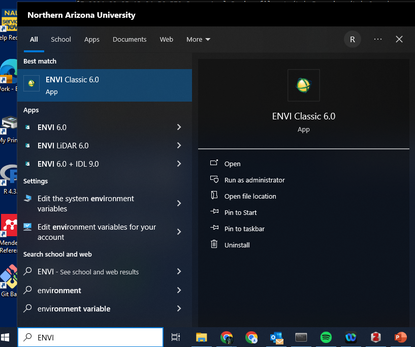 * > 1.2** Click on ENVI Classic 6.0
ENVI Classic will Start up and you will see a toolbar
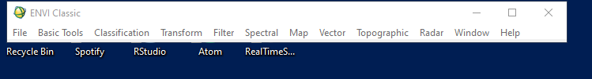
Step 2. Load Landsat 8 Bands
Next we will load landsat 8 bands 1-7. NOTE that when you download a landsat tile you get a seperate file for each band and also a .txt file containing metadata about the Landsat Product you have downloaded.
Recall that Landsat8 OLI/TIRS has 11 Bands, we will only be working with bands 1-7 in this exercise Ultra-Blue to SWIR 2:

2.1 From the ENVI classic Toolbar –select File // Open External File // Generic Formats //
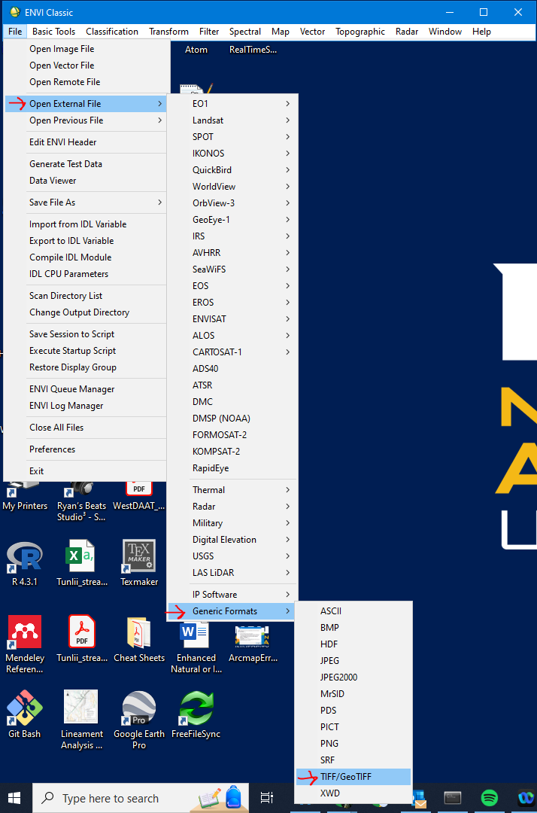
2.2 Navigate to the location of the Landsat 8 bands on your computer or on a local drive
2.3 Hold Shift and Select all files, they should all look like this: LC08_L2SP_037035_20210608_20210615_02_T1_SR_BN.TIF Note: N = 1-7
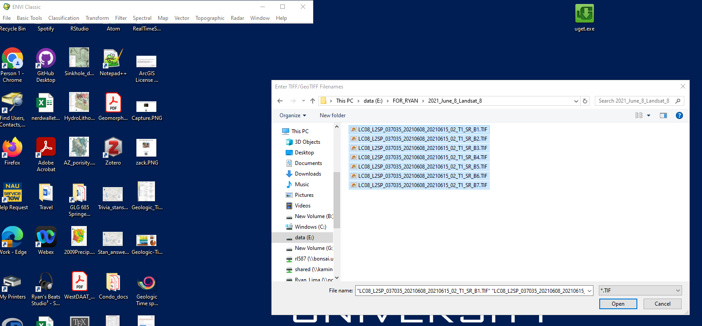
Next you should see a new window pop up containing the available bands, each loaded as a seperate image with 1-Band each, we will combine them into a single image containing 7 bands in step 4 below.
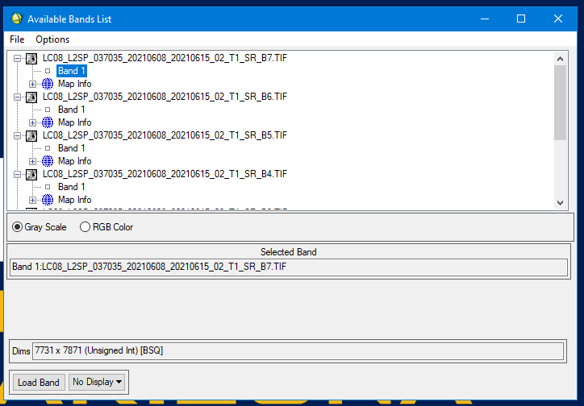
Step 3. Calibrate each band
We need to calibrate each individual band using the metadata and convert the DN (Digital Number) values to Radiance values. But now is also a good time to look at the meta-data file associated with the bands.
From USGS Landsat Calibration & Validation :
While Landsat satellites are well-designed and calibrated prior to launch, continuous calibration is required to offset degradation that may be caused by mechanical or electrical effects, or exposure to UV radiation. Calibration requires a comparison between the measuring instrument and an absolute reference standard known for accuracy. Validation of Landsat data is an ongoing effort
Check the website above for more information.
3.1 Navigate to the Directory containing your band images in Explorer
3.2 Create a new folder/directory called Calibrated … where we will store the calibrated files.
3.3 – Select the metadata file LC08_L2SP_037035_20210608_20210615_02_T1_MTL.txt right-click the file and Open with Notepad or some text editor
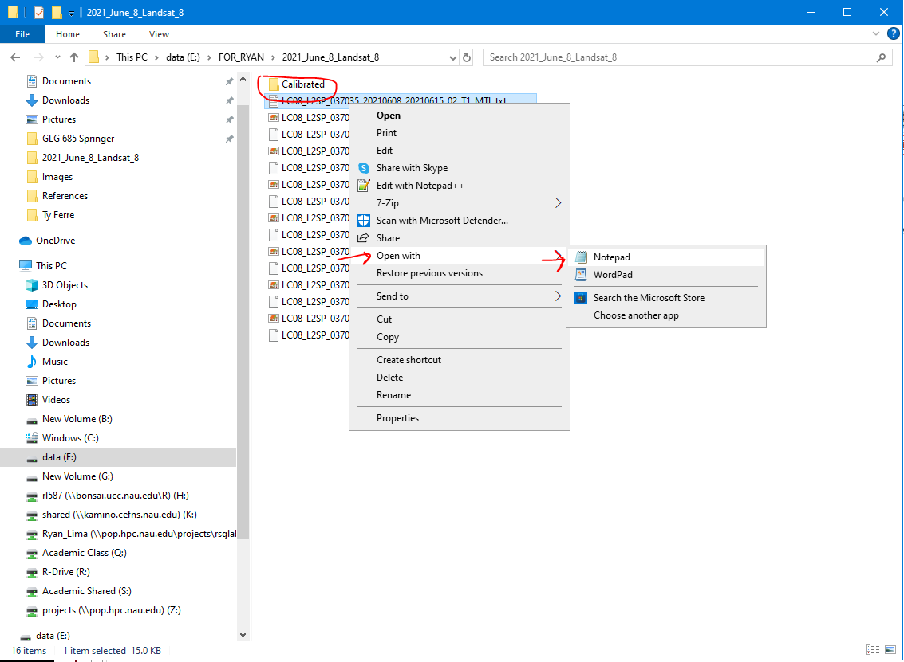 *** 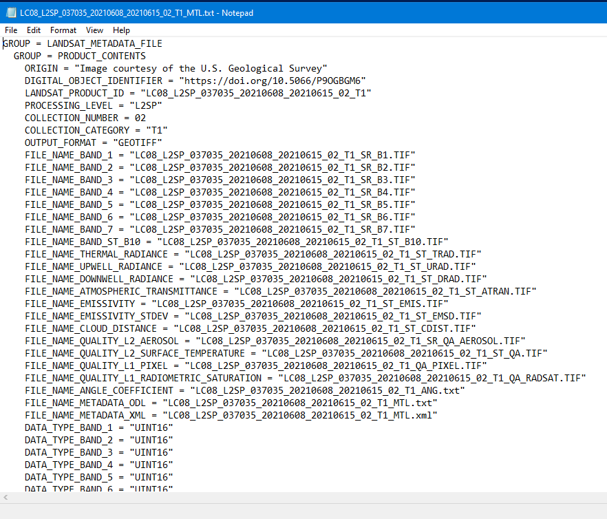
Near the bottom of the Meta Data File you will should see the following:
- MAP_PROJECTION = ‘UTM’ - this is the Universal Tranverse Mercator projection which uses \(meters\)
- DATUM = ‘WGS84’
- UTM_ZONE = 12
- GRID_CELL_SIZE_REFLECTIVE = 30.00 - (\(meters\) because of UTMs)
Now that we have checked the Metadata and everything looks as expected lets Calibrate the Images. We will calibrate each image One-at-a-time
3.4 From the ENVI classic Toolbar – Select: Basic Tools // PreProcessing // Calibration utilities // Landsat calibration
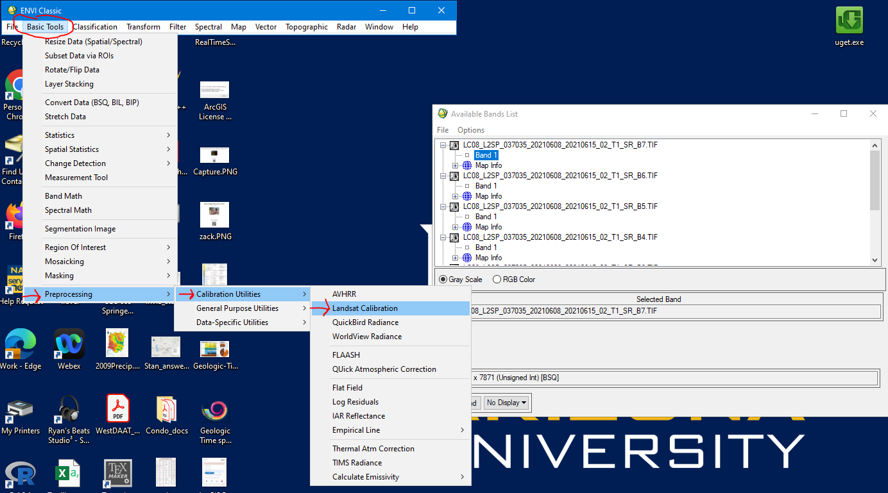
3.5 Click on the first file and check to make sure it ends in *_B1.TIF*
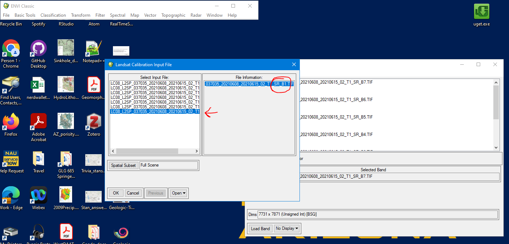
3.6 rename the file LC08_B1_cal and save it to the ~somepath/Calibrated directory
Click OK
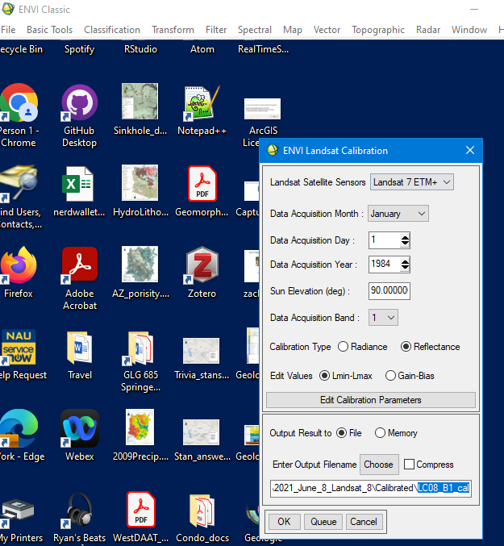
3.7 Repeat with band 2, making sure to click on the the file ending in “_B2.TIF”, rename the file “LC08_B2_cal”
Repeat with bands 3 through 7
When you are finished you Calibrated Directory should contain 14 files:
LC08_BNcal; N = 1 - 7 LC08_BNcal.hdr; N = 1 - 7
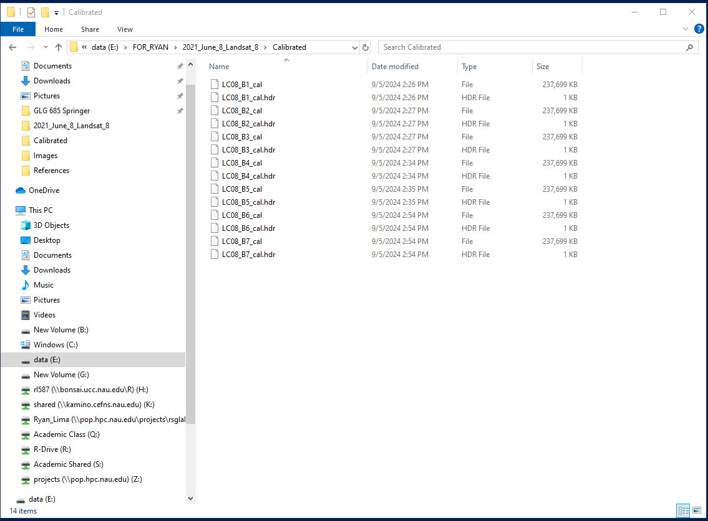
Step 4. Create a layer/band stack
Now we need to load the calibrated bands into ENVI as a layer stack, or a multi-band image
4.1 From the ENVI classic Toolbar – Select Basic Tools // Layer Stacking
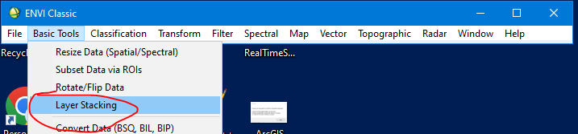
The Layer Stacking Paremeters window will now open
4.2 Click Import File on the Layer Stacking Parameters window then Navigate to your Calibrated Directory and select the calibrated bands 1 - 7
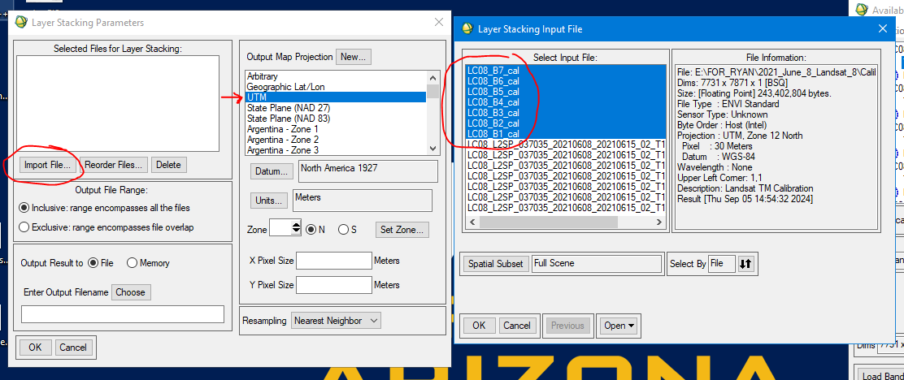
4.3 Next click Reorder files and move them around so they are 1-7 from top to bottom.
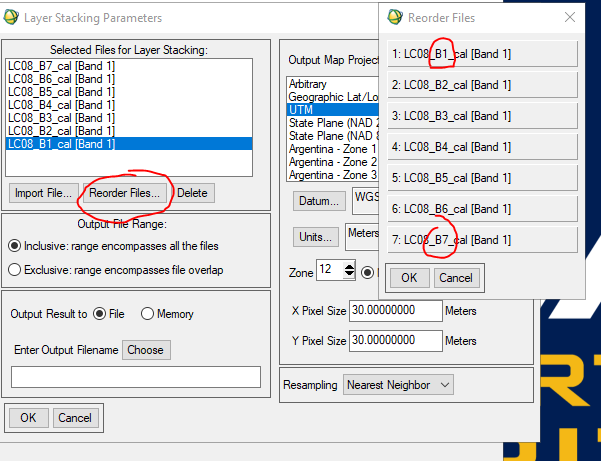
4.4 Name the stack **LC08_B1_B7_cal_stack, save it in the Calibrated directory
Notice on the right side of the Layer Stacking Paramters window that it confirms that the stack is UTM Zone 12, WGS84, and the pixel size is 30 meters.
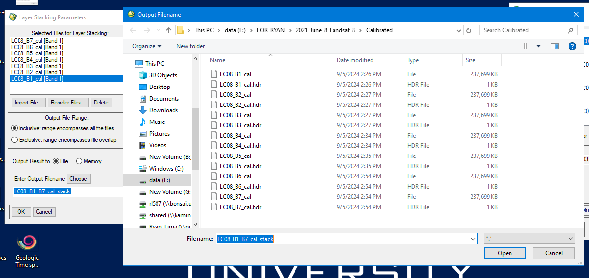
Click OK
Step 5. Open Stacked Image
5.1 Now go to your Avialable Bands List Window and click Load Band
A Greyscale image will appear with three windows showing Band 1 (though its really band seven) I know it is confusing which is why in the next step we will reorder and rename the bands in the bands list.
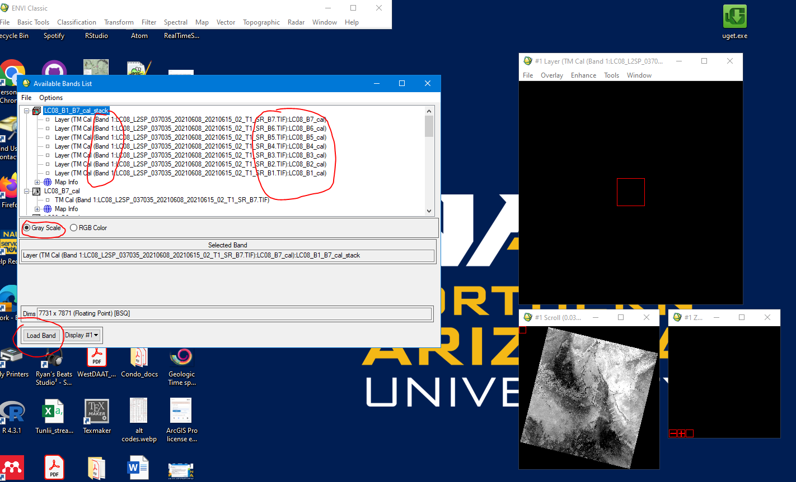
Step 6. Edit Band Names Attributes
6.1 From the ENVI classic Toolbar – Select: File // Edit ENVI header
6.2 When the Edit Header Input File window pops up, – Select LC08_B1_B7_cal_stack click OK
6.3 When the Header Info window pops up, – Select Edit Attributes // Band Names
6.4 When the Edit Band Name values window opens – Select the first Layer. It should be something like: Layer (TM Cal (Band 1:LC08_L2SP_037035_20210608_20210615_02_T1_SR_B7.TIF):LC08_B7_cal) replace that with Band_B7 and hit Enter on your keyboard orclick OK
Repeat with bands 1-6 ensuring you are correctly naming the bands.
Once completed the Avilable Bands List window should show the new names and they should be in order 1-7 from top to bottom
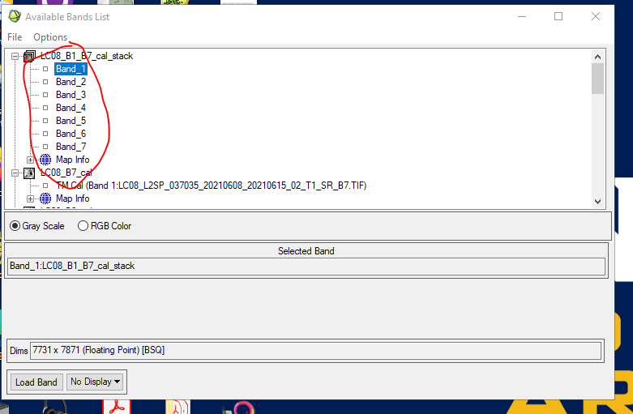
Step 7. Edit Band Attributes
Next we will edit the attributes and change the units to wavelength and select the mean wavelength for each landsat band.
- Band 1 = mean(c(0.43,0.45)) = \(0.44\mu m\)
- Band 2 = mean(c(0.45,0.51)) = \(0.48\mu m\)
- Band 3 = mean(c(0.53,0.59)) = \(0.56\mu m\)
- Band 4 = mean(c(0.64,0.67)) = \(0.655\mu m\)
- Band 5 = mean(c(0.85,0.88)) = \(0.865\mu m\)
- Band 6 = mean(c(1.57,1.655)) = \(1.6125\mu m\)
- Band 7 = mean(c(2.11,2.29)) = \(2.2\mu m\)
7.1 From the ENVI classic Toolbar – Select: File // Edit ENVI header
7.2 When the Edit Header Input File window pops up, – Select LC08_B1_B7_cal_stack click OK
When the Header Info window pops up, – Select Edit Attributes // Wavelengths
7.3 In the Edit Wavelength Values window – Select Band:1 :0.0000 and input the number for Band 1 from above (0.44) which is the mean wavelength or midpoint in the range of values for that band
7.4Make sure to select Micrometers from the Wavelength/FWHM Units dropdown
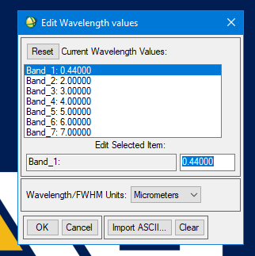
Repeat with other 7 bands using values from above and click OK
when you are finished it should look like this:
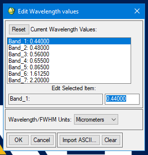
Step 8. Explore the Image
8.1 In the Available Bands List window, toggle from Gray Scale to RGB Color and Click Load RGB selecting Band_4 for R or Red, Band_3 for G or Green and Band_2 for B or Blue
Three display windows should now pop up and be displaying the image in True Color RGB
8.2 Click on the largest window and scroll to some spot on the map with your cursor right-click and select Cursor Location/Value and watch as the Data values for RG & B change as our scroll across the map.
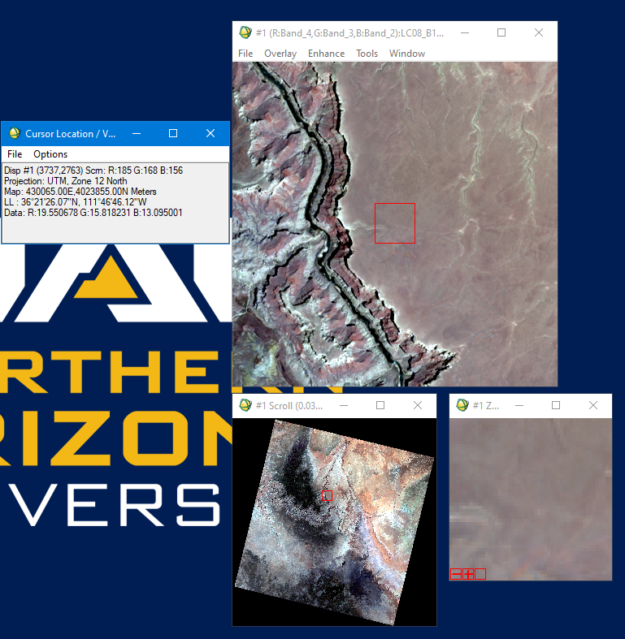
Step 9. Display different band combinations
9.1 Have a look at some common band combinations used for RGB color display.
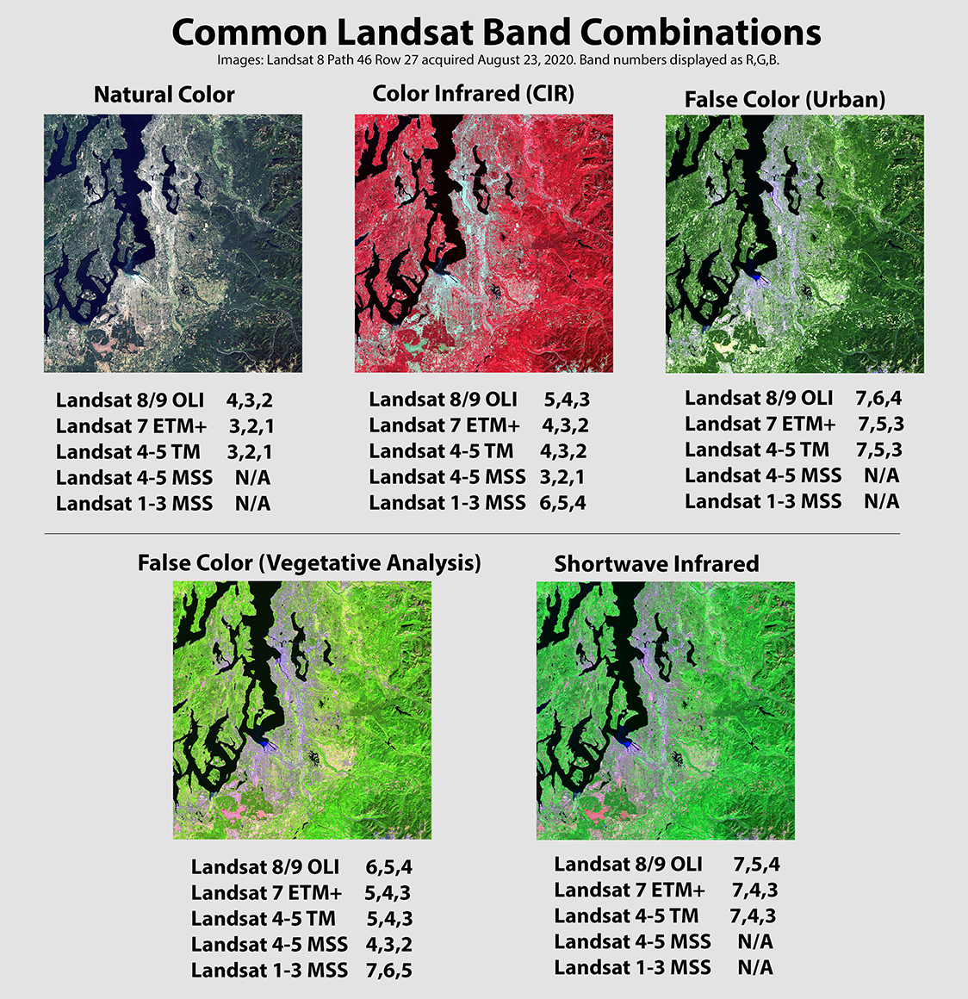
At a minimum try:
Color Infrared (CIR) using bands 5,4 & 3 for RG & B respectively
False Color (Vegetation Analysis) using bands 6,5 & 4 for RG & B respectively